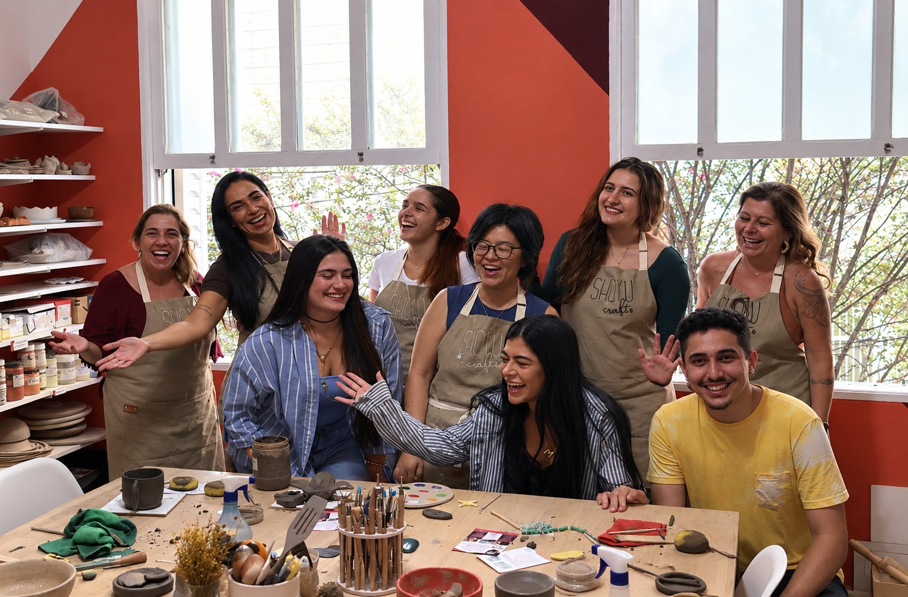
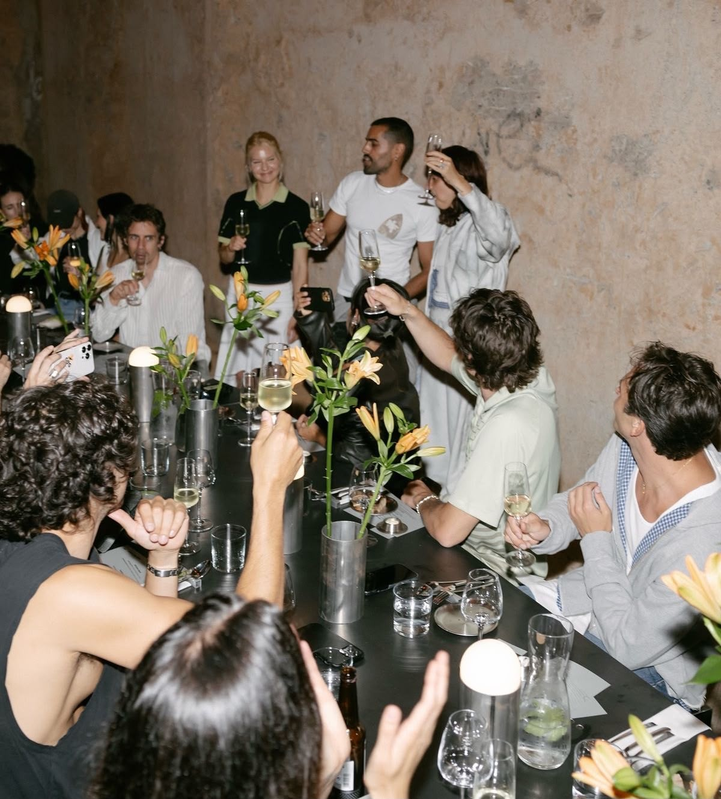
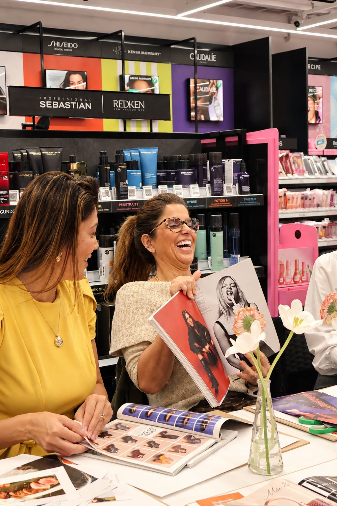
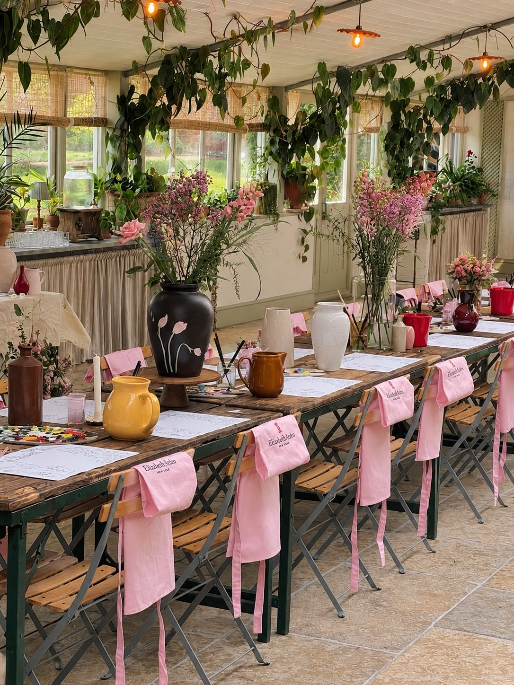
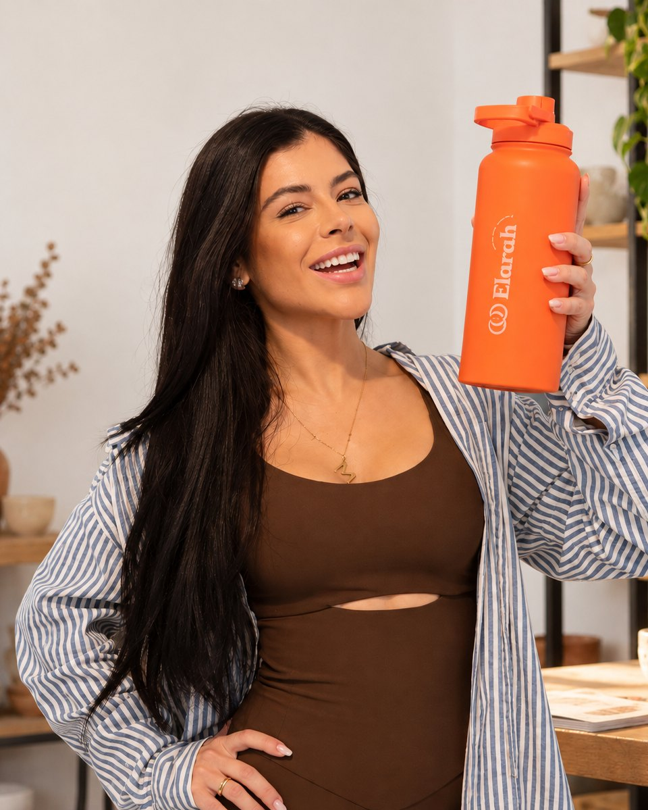
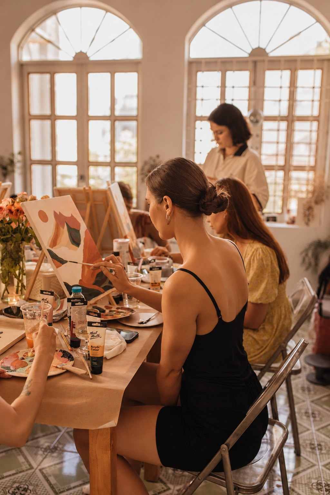

Não começamos com saúde mental. Começamos com experiências.
A Elarah nasceu para aproximar pessoas do que acontece fora das telas: experiências presenciais, criativas e feitas para serem vividas de verdade.
Ao longo da nossa trajetória, levamos experiências para pessoas, grupos e empresas — e foi justamente dentro desses encontros que percebemos algo maior: quando as pessoas têm espaço para criar, conversar, experimentar e estar presentes, alguma coisa muda.
Foi dessa experiência que nasceu a Elarah Mental Health.

Tudo começou com experiências.
A Elarah nasceu como uma curadoria de experiências presenciais em São Paulo — e cresceu conectando pessoas a momentos que dificilmente cabem em uma tela.
Ao longo dessa trajetória, realizamos diversos eventos corporativos e levamos essa proposta para dentro das empresas. E foi aí que percebemos algo que mudou o rumo da nossa história:
as pessoas não precisavam apenas de eventos. Precisavam de espaços para pausar, criar, conversar e estar presentes.
Essa percepção deu origem a um novo braço da Elarah.




Maria Eduarda Vitiello
Maria Eduarda Vitiello é empreendedora e fundadora da Elarah, uma marca criada a partir da vontade de aproximar pessoas de experiências presenciais, criativas e significativas.
Antes da Elarah, Maria Eduarda já havia vivido outras experiências empreendedoras, construindo na prática uma visão sobre negócios, pessoas e criação de novas oportunidades. Atualmente, é estudante da FGV, onde amplia sua formação e sua visão sobre empreendedorismo, negócios e gestão.
À frente da Elarah, transformou uma curadoria de experiências em uma plataforma que conecta pessoas, parceiros e empresas a momentos fora do automático — e que hoje também dá origem à Elarah Mental Health.
Eu sempre acreditei que algumas das melhores conexões acontecem quando a gente simplesmente sai do automático e vive alguma coisa de verdade.
Maria Eduarda Vitiello

Da experiência nasceu um novo braço.
A Elarah Mental Health nasceu daquilo que já víamos acontecer na prática.
Depois de tantos encontros e experiências realizadas com empresas, entendemos o potencial desses momentos como espaços de cuidado, conexão e prevenção.
Por isso, criamos uma frente dedicada ao universo corporativo, unindo arteterapia, experiências criativas e programas estruturados de saúde mental para empresas.
A proposta é simples: criar momentos que as pessoas realmente queiram viver — e que façam sentido para a cultura, os desafios e os objetivos de cada organização.
Não é colocar mais um workshop na agenda. É criar uma pausa que realmente aconteça.
De experiências→para empresas→para saúde mental
- 01
Experiências
Uma curadoria com mais de 20 experiências presenciais para viver fora das telas.
- 02
Corporativo
Eventos e experiências desenvolvidos para empresas, equipes e diferentes momentos da jornada corporativa.
- 03
Elarah Mental Health
Um braço especializado em arteterapia e experiências criativas voltadas à saúde mental no trabalho.
A gente não começou falando sobre saúde mental.
Começou criando experiências.
E foi vivendo essas experiências com tantas pessoas que entendemos o poder que elas têm.
Hoje, levamos esse poder também para dentro das empresas.
Quer conhecer a Elarah por dentro?
Conheça nossas experiências, nossa curadoria e as soluções que criamos para empresas.